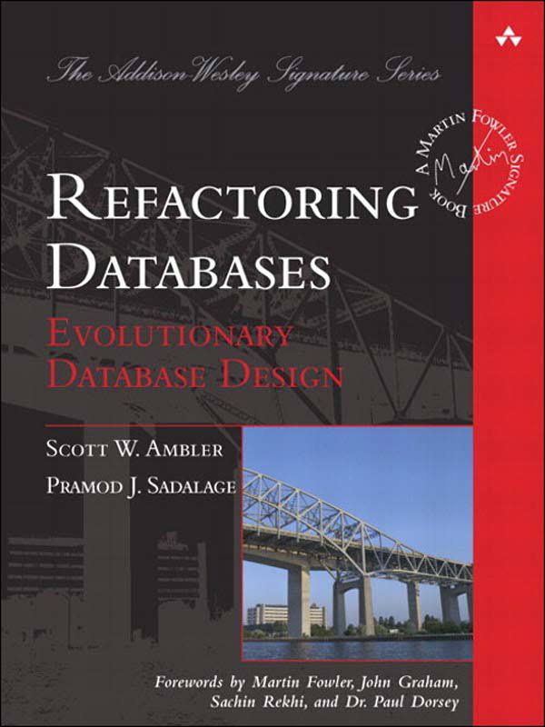

Schema Upgrades In A Continuous Delivery Environment
David Buschman
Technical Lead, Timeli.io
Leader, Architect, Coder, CI, CD, and DevOps
Reactive Credentials
| Timeline | July 2015 | July 2016 |
|---|---|---|
| Architecture | JEE - 1 Tomcat app | 15 Microservices, 5 in API |
| Frameworks | JPA, Spring Integration | Scala, Play, Akka Streams |
| Messaging | RabbitMQ | Kafka |
| Processing | Queued Batches | Reactive Streams |
| Datastores | MySQL, Cassandra | MongoDB, Cassandra |
| DevOps | GCP - VMs - SSH deploy | AWS VPC - 100% Docker |
| Stress/Load | 1000s Meas / Sec | 1 Million Meas / Sec |
| People | 6+ JEE Developers | 2.5 Scala Developers |
Updating legacy monoliths
- Long development and release cycles
- Complex testing, if any testing for older products
- Use a down page to block requests and warn consumers
- Take the database offline, back it up, upgrade it, ...
- Install new application code
- Start everything back up and start praying for no rollback
- Its like throwing mash potatoes on the wall and hoping it sticks.
What wrong with this approach
- Too many things changing all at once.
- Modifying code and data stores at the same time
- Stored procedures - wrong place for business logic
- Incur higher-risks due to increased chances of rollbacks
- “Cost of management confidence” from rollbacks
- You are our own self-inflicted Chaos Monkey
A Trilogy of Topics to Guide us
- Continuous delivery for fast and reliable changes
- Guidelines for deploying changes
- Special Note about Relational Databases
- Rules for validating each step
- Don't Panic because you brought your towel
1. Continuous delivery
for fast and reliable changes
- Deploy iterations are in hours and NOT weeks, months or years
- Automated builds and testing to validate non breaking changes
- Fast deploys force updates to be small, and thus a smaller risk
- Version Control
- Applications "as Code"
- Infrastructure "as Code"
- Schema Changes "as Code"
- Version Control - EVERYTHING!
2. Guidelines for deploying changes
- Only deploy 1 small change at a time
- Execute this as a sequence of small steps
- Only change application code or a datastore, not both
- DRY Violations - ORM frameworks and DDL
- Relational - stored procedures violate #3
- Datastores - always update asynchronously
- Work very hard to not be our own Chaos Monkey
- Two approaches for delivering changes
- Run inside the micro service app itself, upon startup
- 12 factor apps
#12 Run admin/management tasks as one-off processes
3. Special
Note
about
Relational
Databases

4. Rules for validating each step
Each Step Must :
- Compatibility - Be backwards compatible to the previous step
- Accuracy - Have verifiable accuracy
- Simple - Be small and easy to implement
- Back out - Have a simple recovery or backout plan
Note: Number 4 will help you identify if 1 and 3 and correct.
5. Don't Panic
Think about this scenario

Example Schema Upgrade
- Replace legacy Crypto library for OAuth client secrets.
- Apply to all existing Tenants and new ones
- Remove old data when complete
- This will take 6 steps to complete
Step 1 ( D/C ) New Column
Before - reads - old column, writes - old column
case class Tenant(_id: UUID, clientSecret: String)
{ "_id" : "...", "clientSecret" : "..." }
After - reads - old column, writes - old column
case class Tenant(_id: UUID, clientSecret: Option[String], secret:Option[String]) {
def getSecret: String = clientSecret get
}
{ "_id" : "...", "clientSecret" : "..." }
- Compatibility - no data is lost, new column not in play
- Accuracy - unit tests on domain object
- Simple - very small code change
- Back out - restore domain object to "before" case
Step 2 ( C ) New Crypto
Before - reads - old column, writes - old column
case class Tenant(_id: UUID, clientSecret: Option[String], secret:Option[String]) {
def getSecret: String = clientSecret get
}
{ "_id" : "...", "clientSecret" : "..." }
After - reads - new then old, writes - new and old
case class Tenant(_id: UUID, clientSecret: Option[String], secret:Option[String]) {
def getSecret: String = secret orElse clientSecret get
}
{ "_id" : "...", "clientSecret" : "..." }
{ "_id" : "...", "clientSecret" : "...", "secret" : "..." }
- Compatibility - no data is lost, both columns in play
- Accuracy - tests on domain object and domain updates
- Simple - small code change
- Back out - restore domain object to "before" case
Step 3 ( D ) Encrypt all secrets
Write schema upgrade to re-encrypt all secrets in datastore
- Get all Tenant data where secret column is empty
- De-crypt clientSecret and re-encrypt using new algorithm
- Update with new value where secret column is empty
case class Tenant(_id: UUID, clientSecret: Option[String], secret:Option[String]) {
def getSecret: String = secret orElse clientSecret get
}
{ "_id" : "...", "clientSecret" : "...", "secret" : "..." }
- Compatibility - no data is lost, new column now populated
- Accuracy - query database by hand, verify no missing data
- Simple - just the code to populate the new column
- Back out - none, if previous step worked, this will too
Step 4 ( C ) Remove Field
Before - reads - new then old, writes - new and old
case class Tenant(_id: UUID, clientSecret: Option[String], secret:Option[String]) {
def getSecret: String = secret orElse clientSecret get
}
{ "_id" : "...", "clientSecret" : "...", "secret" : "..." }
After - reads - new column, writes - new column
case class Tenant(_id: UUID, secret: String)
{ "_id" : "...", "clientSecret" : "...", "secret" : "..." }
{ "_id" : "...", "secret" : "..." }
- Compatibility - no data is lost, new column is in play
- Accuracy - unit tests on domain object
- Simple - very small code change
- Back out - restore domain object to "before" case
Step 5 ( D ) Remove old data
Remove data from old column where new column data exists
Before - reads - new column, writes - new column
case class Tenant(_id: UUID, secret: String)
{ "_id" : "...", "clientSecret" : "...", "secret" : "..." }
{ "_id" : "...", "secret" : "..." }
After - reads - new column, writes - new column
case class Tenant(_id: UUID, secret: String)
{ "_id" : "...", "secret" : "..." }
- Compatibility - only data that is not used is removed
- Accuracy - only data removed is verified to be stale
- Simple - just the code to clean out the old column
- Back out - none needed, all removed data is not used
Step 6 ( C ) Delete old Crypto
Change app to remove old crypto algorithm and jar(s).
case class Tenant(_id: UUID, secret: String)
{ "_id" : "...", "secret" : "..." }
- Compatibility - removing code that is not active
- Simple - very small code change
- Accuracy - unit tests on domain object
- Back out - none needed
Optional, re-activate the ORM->DDL validation
We are Done!
def questions = ???
Thank You
Use case (LONG TERM)
- upgrade "encryption" algorithm of passwords for all users
- "encryption" is a one-way hashing algorithm
- cannot simple "undo" an already hashed password
- So, how do we do this?
- When a user successfully logs in, we can use that password to
re-hash it using the new algorithm, both algorithms for read. - Wait for password expiration rules to kick in, 180 days
- Hash passwords using random UUIDs for all expired accounts
- Remove old hashing algorithm and jar(s)